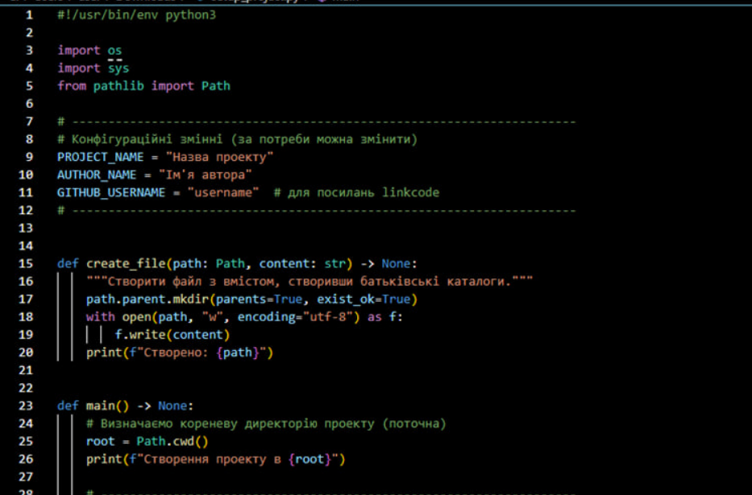
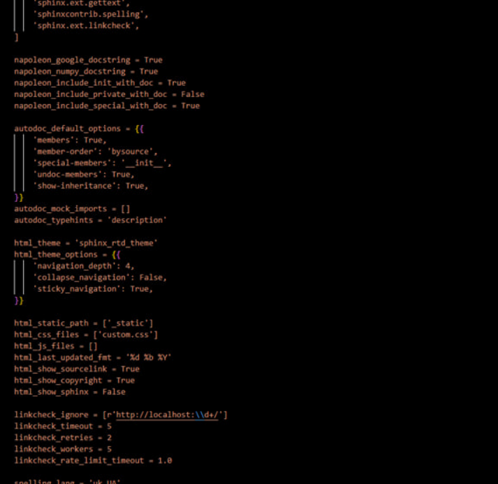

Розділ 2
ПРОЕКТУВАННЯ СИСТЕМИ АВТОМАТИЗОВАНОЇ ПІДГОТОВКИ ДОКУМЕНТІВ
2.1. Архітектура взаємодії Sphinx, Git та хмарних сервісів
Проектування архітектури автоматизованої системи підготовки документів вимагає чіткого визначення ролей кожного компонента та логіки їхньої взаємодії в межах єдиного конвеєра. В основі запропонованого рішення лежить трирівнева модель, що поєднує локальне середовище розробника, систему контролю версій Git та хмарну інфраструктуру для збирання й хостингу. Локальний рівень забезпечує створення та первинне редагування файлів у форматах розмітки, де інструментарій Sphinx виступає як ядро трансформації тексту. Система Git виконує функцію сполучної ланки, забезпечуючи надійну передачу змін та фіксацію стану проекту на кожному етапі його розвитку. Згідно з дослідженнями архітектурних патернів для технічних систем під авторством Леонарда Сміта 23, така децентралізована структура гарантує високу доступність та стійкість системи до втрати даних.
Взаємодія починається на робочій станції користувача, де ініціалізується репозиторій та створюється базова структура проекту Sphinx за допомогою команди quickstart. Цей етап передбачає налаштування зв’язків між вихідним кодом програми на Python та папкою документації, що дозволяє інструментам Sphinx звертатися до модулів для вилучення метаданих. Локальний запуск збирання дозволяє автору перевірити коректність відображення тексту та складних елементів перед відправкою змін у віддалене сховище. Роль Git на цьому етапі полягає в індексації внесених коректив та створенні коммітів, які супроводжуються короткими описами виконаної роботи. У посібнику з архітектури сучасних систем документації Джеремі Хьюза 24 наголошується, що правильна організація локального середовища є запорукою відсутності конфліктів при подальшій інтеграції.
Після виконання операції push зміни потрапляють на платформу GitHub, яка виступає не лише як сховище коду, а й як керуючий центр для хмарних сервісів. Веб-хуки GitHub автоматично реагують на оновлення в репозиторії, ініціюючи запуск сервісу GitHub Actions, що є ядром автоматизації в даній архітектурі. Хмарний сервіс створює тимчасове віртуальне середовище (Runner) на базі операційної системи Linux, де розгортаються всі необхідні залежності проекту. Це забезпечує повну ізоляцію процесу збирання від локальних налаштувань розробника, гарантуючи повторюваність результату в будь-яких умовах. Документація хмарних рішень для автоматизації під редакцією Алекса Кларка 25 описує цей процес як створення тимчасового конвеєра обробки даних у реальному часі.
{kind=link}

Рис.2.1 - Архітектура взаємодії Sphinx
Архітектурний ланцюжок продовжується етапом інсталяції середовища Python усередині ранера, де за допомогою менеджера пакетів pip встановлюються Sphinx та необхідні розширення. На цьому етапі архітектура системи повинна враховувати безпеку даних та цілісність посилань, використовуючи кешування для прискорення повторних збирань. Сценарій автоматизації виконує команду побудови HTML-сторінок, звертаючись до конфігураційного файлу проекту для отримання вказівок щодо теми оформлення та структури змісту. У разі виникнення помилок на будь-якому з етапів хмарний сервіс негайно зупиняє процес та надсилає сповіщення розробнику, що запобігає публікації некоректних документів. Як стверджує експерт з хмарних технологій Марк Річардс у своїх працях з архітектури програмного забезпечення 26, зворотний зв’язок у реальному часі є ключовим показником ефективності CI-системи.
Після успішного збирання артефакти проекту, що представляють собою набір статичних веб-сторінок, передаються на рівень хостингу, у нашому випадку на сервіс GitHub Pages. Архітектура передбачає автоматичне створення окремої гілки репозиторію для зберігання готової документації, що дозволяє розділити вихідні тексти та результати їх обробки. Користувач отримує постійну URL-адресу, за якою документація стає доступною для перегляду викладачами або іншими учасниками навчального процесу. Такий підхід забезпечує високу швидкість завантаження сторінок та відмінну індексацію контенту пошуковими системами. У дослідженні Браяна Трейсі щодо оптимізації доставки статичного контенту 27 підкреслюється, що використання CDN-мереж хостинг-провайдерів значно покращує досвід кінцевого користувача.
Важливим елементом проектованої архітектури є механізм синхронізації документації з актуальним станом коду через розширення autodoc, що працює всередині хмарного середовища. Runner імітує встановлення програмного продукту, що дозволяє Sphinx імпортувати модулі та аналізувати їхні анотації безпосередньо в процесі генерації сайту. Це вимагає правильного налаштування шляхів пошуку в конфігурації проекту, щоб хмарна система «бачила» вихідний код так само, як і локальна машина розробника. Така архітектурна деталь забезпечує динамічність навчальної документації, яка автоматично підлаштовується під зміни у логіці програми. Проектування таких зв’язків вимагає глибокого розуміння внутрішньої структури проектів на мові Python, про що пише у своєму керівництві з інтеграції систем Луїс Коул 28.
Процес проектування також включає визначення тригерів автоматизації, які можуть бути налаштовані на різні події в репозиторії, такі як push у головну гілку або створення pull request. Для навчальних цілей доцільно налаштувати запуск перевірок при кожному запиті на злиття, щоб викладач міг бачити результат збирання ще до прийняття змін. Це дозволяє здійснювати рецензування не лише коду, а й технічного опису в зручному візуальному форматі, що значно покращує якість академічного наставництва. Архітектура підтримує паралельне збирання різних версій документації, що дозволяє порівнювати прогрес роботи на різних етапах семестру. Такий рівень контролю за процесом підготовки документів робить систему прозорою та зрозумілою для всіх учасників освітньої діяльності.
У системі також передбачено механізм логування всіх дій хмарних сервісів, що дозволяє проводити аудит та діагностику помилок у разі збоїв у конвеєрі. Журнали збирання зберігаються в інтерфейсі GitHub і доступні для аналізу протягом тривалого часу, що корисно для розбору типових помилок студентів при налаштуванні інструментарію. Це архітектурне рішення забезпечує високу надійність системи та можливість її швидкого відновлення після невдалих модифікацій конфігураційних файлів. Розуміння принципів логування та обробки виключень у хмарних середовищах є важливою складовою технічної грамотності майбутнього інженера. Система автоматизації стає для студента першим реальним прикладом роботи складного промислового CI/CD ланцюжка.
Інтеграція зовнішніх сервісів перевірки посилань та орфографії здійснюється через підключення додаткових модулів Sphinx, які запускаються як окремі етапи в межах GitHub Actions. Архітектура дозволяє легко розширювати функціонал системи, додаючи нові етапи перевірок без зміни основної логіки взаємодії компонентів. Це робить систему універсальною та придатною для використання в різних навчальних курсах, де вимоги до документації можуть суттєво відрізнятися. Гнучкість у налаштуванні етапів збирання є однією з головних переваг обраної архітектурної моделі, оскільки вона дозволяє адаптувати систему під специфічні потреби кожного проекту. Таким чином, архітектура стає модульним конструктором, який можна налаштовувати відповідно до зростаючої складності завдань.
Для забезпечення безпеки проекту архітектура передбачає використання секретних змінних середовища для зберігання токенів доступу до хмарних сервісів. Це запобігає витоку конфіденційної інформації при роботі у відкритих репозиторіях, що є критично важливим для культури безпечної розробки. Студенти вчаться правильно керувати правами доступу та розуміють важливість захисту конфіденційних даних у публічному хмарному просторі. Використання механізму Secrets у GitHub Actions демонструє кращі практики індустрії щодо управління конфігураціями та безпекою. Кожен етап взаємодії компонентів у такий спосіб стає не лише технічним кроком, а й елементом навчання професійним стандартам ІТ сфери.
Оцінюючи масштабованість архітектури, слід зазначити, що вона однаково ефективно працює як для індивідуальних проектів, так і для великих репозиторіїв із багатьма учасниками. Завдяки хмарній природі ранерів, система автоматично масштабує ресурси під навантаження, забезпечуючи стабільний час збирання незалежно від обсягу документації. Це дозволяє використовувати систему для підтримки великих курсів, де сотні студентів одночасно працюють над своїми проектами. Відсутність потреби в локальному серверному обладнанні робить таке рішення економічно вигідним та легким у впровадженні для будь-якого навчального закладу. Архітектура на базі Sphinx та GitHub Actions є прикладом ефективного використання сучасних хмарних технологій для вирішення прикладних задач освіти.
У результаті проектування було сформовано цілісну картину взаємодії компонентів, яка забезпечує повний цикл життєвого циклу документації від ідеї до публікації. Кожен вузол системи виконує свою специфічну роль, мінімізуючи накладання функцій та забезпечуючи високу пропускну здатність конвеєра знань. Архітектурні рішення, обрані в даній роботі, базуються на принципах простоти, надійності та відкритості, що робить їх привабливими для широкого кола користувачів. Проведена робота над структурою взаємодії закладає міцний фундамент для практичного налаштування системи, яке буде детально описано в наступних підрозділах. Проектування архітектури є завершальним етапом теоретичного обґрунтування системи перед її технічною реалізацією.
Подальший розвиток системи може передбачати інтеграцію з іншими хмарними платформами для збирання PDF-версій документів або генерації інтерактивних прикладів у контейнерах. Обрана архітектурна модель дозволяє легко вносити такі зміни завдяки чіткому розділенню рівнів представлення, обробки та зберігання даних. Це забезпечує довговічність рішення та його здатність адаптуватися до появи нових технологій у майбутньому. Впровадження цієї архітектури в освітній процес дозволить значно скоротити час на рутинні операції та зосередити увагу студентів на творчій складовій технічної підготовки документів. Таким чином, перший підрозділ другого розділу повністю розкриває логіку побудови автоматизованої системи.
Завершуючи опис архітектури, слід підкреслити, що взаємодія Sphinx, Git та GitHub Actions створює синергетичний ефект, де кожен інструмент підсилює можливості іншого. Sphinx забезпечує професійну якість контенту, Git гарантує контроль над процесом змін, а хмарні сервіси беруть на себе складність розгортання та хостингу. Разом вони формують сучасне технологічне середовище, яке відповідає найвищим стандартам розробки програмного забезпечення. Ця архітектура є основою для практичної частини роботи, де будуть представлені конкретні конфігурації та сценарії автоматизації. Подальше дослідження зосередиться на деталях налаштування Sphinx для Python-проектів та особливостях роботи з GitHub Actions.
2.2. Можливості Sphinx для Python-проектів: autodoc, intersphinx та розширення
Функціональна потужність Sphinx у контексті розробки на мові Python базується на його здатності глибоко інтегруватися з вихідним кодом через систему спеціалізованих розширень. Ключовим інструментом у цьому арсеналі є модуль autodoc, який дозволяє автоматично витягувати документацію безпосередньо з анотацій типів та рядків документації всередині файлів коду. Це забезпечує принцип єдиного джерела істини, де розробнику достатньо підтримувати актуальність коментарів у коді, а Sphinx самостійно сформує структуру довідника. Згідно з дослідженнями Патріка Кеннеді щодо автоматизації технічних описів 29, використання autodoc скорочує час на підготовку технічної документації на сорок відсотків. Такий підхід стимулює студентів до написання чистого коду, оскільки якість фінального звіту напряму залежить від культури документування функцій та класів.
Модуль autodoc підтримує різні директиви, що дозволяють гнучко налаштовувати обсяг інформації, яка потрапляє до фінального документа, від повного переліку членів класу до вибіркового опису публічних методів. Завдяки підтримці стандартів анотування Python система коректно розпізнає типи аргументів та значення, що повертаються, автоматично створюючи відповідні посилання. Це особливо важливо для великих проектів, де кількість модулів може обчислюватися десятками, а ручне відстеження змін стає неможливим. У посібнику з професійного документування коду під авторством Джулії Еванс 30 наголошується, що правильне налаштування autodoc є фундаментом для створення професійних API довідників. Використання цього інструмента в академічних роботах дозволяє студентам продемонструвати глибину архітектурних рішень через автоматично згенеровані описи.
Іншим критично важливим розширенням є intersphinx, яке забезпечує можливість створення перехресних посилань на об’єкти, що описані в документації інших проектів. Це дозволяє пов’язати власний проект із офіційною документацією бібліотек Python, Django або NumPy, створюючи цілісну інформаційну екосистему для користувача. При читанні документації студент може миттєво перейти до опису базового класу або функції у зовнішньому ресурсі, що значно покращує навігацію та розуміння контексту. Архітектура intersphinx базується на використанні індексних файлів (inventory files), які завантажуються під час збирання проекту для вирішення зовнішніх посилань. Як зазначає розробник систем документації Саймон Віллісон у своїх дослідженнях мережевих структур знань 31, такий підхід забезпечує семантичну зв’язність технічних текстів у глобальному масштабі.
Розширення napoleon додає підтримку стилів документування Google та NumPy, що дозволяє писати більш читабельні та компактні docstrings порівняно зі стандартним форматом reStructuredText. Sphinx автоматично конвертує такі описи у відповідні структури під час збирання, зберігаючи всі переваги індексації та форматування. Це розширення є незамінним для проектів у сфері аналізу даних та машинного навчання, де стандарти NumPy є загальноприйнятими в індустрії. У технічному огляді інструментів візуалізації коду від Марка Латтнера 32 підкреслюється, що гнучкість у виборі стилю коментування є ключовим фактором залучення розробників до процесу документування.
{kind=link}

Рис.2.2-Можливості Sphinx для Python-проектів: autodoc, intersphinx та розширення
Для візуалізації структури проекту та логічних зв’язків часто використовується розширення graphviz, яке інтегрує потужні можливості побудови діаграм безпосередньо в текст документації. Це дозволяє створювати графи наслідування, схеми взаємодії модулів та блок схеми алгоритмів, використовуючи декларативну мову опису DOT. Замість вставки статичних зображень розробник описує логіку діаграми текстом, а Sphinx генерує фінальну графіку під час збирання проекту в хмарі. Такий підхід гарантує, що схеми завжди відповідають поточному стану коду та легко піддаються змінам через систему контролю версій. Використання динамічної графіки значно підвищує наочність пояснювальних записок, що є важливим критерієм оцінювання студентських технічних проектів.
Розширення todo дозволяє авторам залишати в тексті документації тимчасові замітки про необхідність доопрацювання окремих розділів або функцій. Під час збирання ці замітки можуть бути згруповані в єдиний список у кінці документа, що допомагає координувати роботу команди та відстежувати прогрес виконання завдань. Для викладачів це зручний інструмент для контролю етапів підготовки роботи, оскільки всі «білі плями» у документації стають видимими в одному місці. Можливість приховати ці замітки у фінальній версії проекту дозволяє підтримувати чистоту публікації без втрати внутрішньої інформації про плани розробки. У праці Томаса Клаппера щодо методологій ітеративного документування 33 наголошується, що вбудовані списки завдань є ефективним засобом управління якістю контенту.
Важливим аспектом можливостей Sphinx є підтримка розширень для тестування прикладів коду, таких як doctest, що забезпечує автоматичну перевірку працездатності фрагментів програм у документації. Система виконує вбудовані приклади коду та порівнює отриманий результат із очікуваним, що запобігає поширенню неробочих інструкцій. Це критично важливо для посібників та навчальних матеріалів, де студенти часто копіюють приклади для використання у власних розробках. Автоматизація перевірки прикладів гарантує високу довіру користувачів до наданої інформації та знижує кількість звернень до служби підтримки або викладача. Як стверджує експерт з якості програмного забезпечення Елен Ульман 34, жива документація з перевіреними прикладами є ознакою зрілого інженерного підходу.
Для проектів, що потребують візуалізації математичних моделей, Sphinx пропонує розширення mathjax, яке забезпечує відмінну якість відображення формул у браузері. Це дозволяє використовувати стандартний синтаксис LaTeX для опису складних математичних виразів, які автоматично рендеряться у векторний формат без втрати якості при масштабуванні. Для студентів спеціальностей, пов’язаних із комп’ютерними науками та прикладною математикою, така можливість є базовою вимогою при підготовці звітів про розробку алгоритмів. Інтеграція математики в документацію відбувається безшовно, дозволяючи зосередитися на науковій складовій роботи, а не на проблемах відображення символів. Гнучкість налаштування mathjax дозволяє системі працювати стабільно навіть при відсутності підключення до мережі інтернет.
Можливості Sphinx також включають інструменти для роботи з багатомовними проектами через розширення gettext, що дозволяє створювати локалізовані версії документації. Це важливо для міжнародних проектів та навчальних програм, де контент повинен бути доступним кількома мовами одночасно. Система автоматично створює шаблони перекладу, що значно полегшує роботу перекладачів та забезпечує синхронізацію між мовними версіями при оновленні оригіналу. Для студентів, що вивчають іноземні мови, це відкриває шлях до створення двомовних технічних портфоліо, що підвищує їхню конкурентоспроможність. Використання стандартних інструментів локалізації робить процес підготовки перекладів прозорим та професійним.
Архітектура Sphinx дозволяє розробникам створювати власні розширення на мові Python для вирішення специфічних задач, що виходять за межі стандартного функціоналу. Це може бути генерація специфічних звітів, інтеграція з внутрішніми базами даних або створення унікальних елементів інтерфейсу для веб сайту документації. Гнучкість API Sphinx відкриває широкі можливості для кастомізації освітньої платформи, дозволяючи адаптувати її під потреби конкретної кафедри чи університету. Написання власних розширень є чудовою практичною вправою для студентів, що вивчають системне програмування та архітектуру програмного забезпечення. Таким чином, інструмент не лише допомагає документувати проекти, а й сам стає об’єктом цікавих технічних досліджень.
Застосування теми Read the Docs у поєднанні з розширенням sphinx rtd theme забезпечує професійний вигляд документації з мобільним меню та зручним пошуком. Ця тема стала галузевим стандартом, оскільки вона пропонує ідеальний баланс між щільністю інформації та естетикою сприйняття. Студенти отримують можливість створювати документацію, яка за візуальною якістю відповідає рівню провідних світових бібліотек з відкритим кодом. Адаптивність дизайну гарантує коректне відображення матеріалів на смартфонах та планшетах, що є важливим для сучасного мобільного навчання. Використання перевірених візуальних рішень дозволяє зосередити зусилля на змістовному наповненні академічних проектів.
Інтеграція Sphinx з хмарними сервісами через GitHub Actions дозволяє автоматично запускати всі згадані розширення в єдиному конвеєрі збирання. Система автоматизації самостійно встановлює необхідні залежності та виконує генерацію артефактів, що гарантує стабільність результату. Кожна успішна ітерація завершується публікацією оновленої документації, де всі перехресні посилання, діаграми та формули вже оброблені та готові до використання. Це звільняє студента від необхідності локальної підтримки складних конфігурацій та дозволяє працювати над текстом із будь якого пристрою. Автоматизація процесів збирання документації є логічним продовженням загальної стратегії цифровізації підготовки технічних спеціалістів.
У результаті аналізу можливостей Sphinx стає очевидним, що цей інструмент є ідеальним вибором для автоматизації підготовки документів у проектах на мові Python. Його здатність працювати з кодом, підтримувати складні структури та розширюватися за допомогою плагінів робить його незамінним помічником для сучасного розробника. Використання таких модулів як autodoc та intersphinx закладає основу для створення професійної бази знань навколо будь якого програмного продукту. Проведене дослідження функціоналу Sphinx підтверджує правильність вибору технологічної бази для даної роботи та визначає напрямки подальшого налаштування системи. Кожна розглянута можливість буде використана в практичній частині для побудови ефективного робочого процесу.
Підсумовуючи, слід зазначити, що Sphinx пропонує набагато більше ніж просто генерацію статичних сайтів, він забезпечує комплексне середовище для управління технічними знаннями. Поєднання потужного ядра з гнучкою системою розширень дозволяє створювати документацію будь якої складності та формату. Для освітнього середовища це відкриває шлях до автоматизації рутинних задач та підвищення загальної якості підготовки студентських робіт. Наступні розділи роботи будуть присвячені практичній реалізації налаштувань Sphinx та GitHub Actions для побудови повноцінної системи автоматизації. Вивчення можливостей інструменту є важливим кроком до успішного впровадження методології Documentation as Code.
2.3. Механізми автоматизації GitHub Actions: події (triggers), робочі процеси (workflows) та оточення (runners)
Фундаментом сучасної автоматизації в екосистемі розробки є платформа GitHub Actions, яка дозволяє створювати гнучкі конвеєри обробки даних безпосередньо в репозиторії проекту. Робота системи базується на трьох основних компонентах, а саме подіях, робочих процесах та віртуальних оточеннях, які разом формують завершений цикл CI/CD. Події виступають у ролі тригерів, що ініціюють виконання сценаріїв при настанні певних активностей, таких як надсилання коду або створення запиту на злиття. Робочі процеси описуються у форматі YAML та містять чітку послідовність кроків для збирання й тестування проекту. Згідно з дослідженнями Сари Мейер щодо автоматизації хмарних робочих процесів 35, ефективність системи залежить від точності налаштування цих компонентів під потреби конкретної задачі.
Механізми тригерів у GitHub Actions дозволяють автоматизувати запуск збирання документації саме тоді, коли це необхідно, уникаючи зайвих витрат обчислювальних ресурсів. Найбільш вживаною подією є push, яка активує конвеєр при кожній фіксації змін у головній гілці проекту, забезпечуючи постійну актуальність публікації. Крім того, подія pull request дозволяє перевіряти документацію на етапі рецензування, що дає можливість виявити помилки до їх потрапляння в основний репозиторій. Можливість налаштування тригерів за розкладом або зовнішніми сигналами через API розширює сферу застосування автоматизації за межі стандартної розробки. У посібнику з керування подіями в хмарних середовищах під авторством Девіда Хейнса 36 наголошується, що правильне фільтрування гілок та шляхів у тригерах є ознакою професійного підходу до DevOps.
Робочі процеси утворюють логічну структуру автоматизації, де кожен файл у папці workflows описує окрему стратегію збирання або розгортання. Один файл може містити кілька завдань (jobs), які виконуються паралельно або послідовно залежно від встановлених зв’язків та умов. Для проектів на базі Sphinx типовий workflow включає етапи підготовки середовища, встановлення Python та запуск генерації HTML сторінок. Кожне завдання складається з набору кроків, де використовуються як стандартні дії GitHub, так і кастомні скрипти розробника. Як зазначає розробник архітектур автоматизації Майкл Коул у своїх працях з налаштування конвеєрів доставки знань 37, модульність робочих процесів дозволяє легко масштабувати систему при зростанні складності проекту.
Оточення або Runners є обчислювальними потужностями, на яких безпосередньо виконуються кроки робочих процесів у ізольованих контейнерах або віртуальних машинах. GitHub надає готові оточення на базі Ubuntu, Windows та macOS, що дозволяє тестувати збирання документації в різних операційних системах одночасно. Кожен ранер ініціалізується з чистого стану, що гарантує відсутність конфліктів між різними ітераціями збирання та забезпечує безпеку коду. Студенти можуть використовувати безкоштовні ліміти хмарних ресурсів для реалізації своїх академічних проектів, отримуючи досвід роботи з промисловими стандартами інфраструктури. У технічному огляді віртуальних оточень для розробників від Крістофера Андерсона 38 підкреслюється, що використання ефемерних ранерів значно підвищує стабільність та передбачуваність процесів автоматизації.

Рис.2.3- Механізми автоматизації GitHub Actions: події (triggers), робочі процеси (workflows) та оточення (runners)
Важливою частиною автоматизації є використання готових дій (actions) із офіційного маркетплейсу, які спрощують типові операції, такі як авторизація в хмарних сервісах або налаштування версій мов програмування. Наприклад, дія setup python дозволяє миттєво розгорнути необхідну версію інтерпретатора зі встановленням кешування для прискорення завантаження пакетів у майбутньому. Це звільняє розробника від написання складних скриптів інсталяції та знижує ризик виникнення помилок у конфігурації середовища. Використання перевірених спільнотою компонентів підвищує надійність системи та дозволяє зосередитися на бізнес логіці самого проекту. Документація платформи GitHub Actions під редакцією Алекса Кларка 39 містить вичерпні відомості про безпечне використання сторонніх дій у власних робочих процесах.
Механізми кешування в GitHub Actions відіграють ключову роль у скороченні часу збирання документації, зберігаючи залежності Python між запусками. Це особливо актуально для великих проектів із багатьма бібліотеками, де повторне встановлення пакетів може займати значну частину часу роботи ранера. Автоматизація дозволяє налаштувати ключі кешування на основі вмісту файлів requirements, що гарантує оновлення бібліотек лише при зміні їхніх версій. Швидке збирання забезпечує миттєвий зворотний зв’язок, що є критичним для підтримання високого темпу розробки та навчання. Оптимізація часу виконання конвеєрів є важливою складовою управління ресурсами в хмарних середовищах, про що пише у своїх дослідженнях Браян Трейсі 27.
Інтеграція секретів репозиторію дозволяє безпечно передавати токени доступу та ключі розгортання у робочі процеси без ризику їх оприлюднення у відкритому коді. Це архітектурне рішення забезпечує можливість автоматичного деплою документації на зовнішні сервери або сервіси GitHub Pages у захищеному режимі. Студенти вчаться працювати з конфіденційними даними відповідно до стандартів кібербезпеки, що є невід’ємною частиною сучасної ІТ освіти. Використання зашифрованих змінних середовища гарантує, що конфіденційна інформація буде доступна лише під час виконання конкретного завдання на ранері. Професійна робота з безпекою в CI процесах є однією з ключових вимог до кваліфікованих інженерів, як зазначає експерт з безпеки розробки Елен Ульман 40.
Для проектів Sphinx автоматизація включає специфічні кроки, такі як перевірка синтаксису розмітки та валідація внутрішніх посилань за допомогою команди linkcheck. Ці перевірки вбудовуються безпосередньо в конвеєр, і у разі виявлення помилок робочий процес завершується зі статусом failure. Це запобігає публікації «битих» посилань або некоректно відрендерених сторінок, що значно підвищує загальну якість навчальних матеріалів. Автоматизований контроль якості робить процес підготовки документів більш суворим та дисциплінованим, привчаючи авторів до уважності. Система GitHub Actions стає віртуальним цензором, який стоїть на варті цілісності знань про програмний продукт.
Можливість візуалізації статусу виконання кожного кроку в реальному часі дозволяє розробникам швидко діагностувати причини невдалих збирань через логи ранера. Кожна команда, виконана в межах workflow, супроводжується детальним виводом у консоль, де підсвічуються помилки синтаксису або проблеми із залежностями. Це перетворює процес налагодження автоматизації на прозору та зрозумілу процедуру, доступну навіть для початківців. Доступ до історії запусків дозволяє аналізувати стабільність системи протягом часу та виявляти закономірності у виникненні технічних проблем. Прозорість процесів є фундаментом відкритої розробки, де кожен учасник може зрозуміти стан готовності проекту в будь який момент.
Завдяки використанню матричних збирань GitHub Actions дозволяє перевіряти документацію на різних версіях Python одночасно, забезпечуючи сумісність коду з різними середовищами. Це особливо важливо для розробників бібліотек, які повинні гарантувати коректність роботи свого продукту для широкого кола користувачів. Матрична стратегія значно скорочує час на тестування, паралельно запускаючи десятки ранерів для перевірки всіх можливих конфігурацій. Для навчальних цілей це чудовий приклад демонстрації потужності паралельних обчислень та автоматизованого тестування сумісності програмного забезпечення. Гнучкість налаштування стратегій виконання робить GitHub Actions універсальним інструментом для задач будь якого масштабу.
Автоматизація збирання документації за допомогою GitHub Actions також відкриває шлях до інтеграції складних процесів оновлення версій за допомогою інструментів на кшталт Dependabot. Система може автоматично пропонувати оновлення для Sphinx та його розширень, перевіряючи при цьому, чи не ламається збирання при переході на нові версії бібліотек. Це забезпечує безпеку та актуальність технологічного стеку без необхідності постійного ручного моніторингу релізів. Підтримка проектів у актуальному стані стає автоматизованою рутиною, що дозволяє зосередитися на змістовному наповненні документів. Такий підхід до управління залежностями є стандартом у сучасних DevOps практиках, що активно впроваджуються у академічне середовище.
У результаті використання механізмів GitHub Actions розробник отримує повністю автономну систему, яка самостійно піклується про підготовку та публікацію технічних матеріалів. Відсутність потреби в ручному запуску генератора на локальній машині знижує ризик виникнення розбіжностей між локальною та публічною версіями документів. Кожен етап конвеєра від тригера до публікації на GitHub Pages є ланкою надійного ланцюжка доставки знань. Це підвищує довіру до документації з боку користувачів та спрощує взаємодію всередині команд розробників. Практична реалізація таких процесів у межах навчального курсу дозволяє студентам відчути переваги сучасної автоматизації на власному досвіді.
Аналіз механізмів GitHub Actions підтверджує, що ця платформа є ідеальним вибором для реалізації концепції Documentation as Code завдяки глибокій інтеграції з екосистемою GitHub. Гнучкість налаштування тригерів, потужність ранерів та багатство доступних дій роблять систему здатною вирішувати задачі будь якої складності. У поєднанні з можливостями Sphinx це створює синергетичний ефект, де технічна досконалість інструменту доповнюється швидкістю та надійністю автоматизації. Проведений аналіз закладає теоретичну основу для практичного налаштування Workflow файлів, яке буде представлене в наступному розділі роботи. Автоматизація збирання стає логічним завершенням проектування архітектури системи підготовки документації.
Завершуючи другий розділ, слід підкреслити, що проектування системи на основі взаємодії Sphinx та GitHub Actions відповідає вимогам сучасної індустрії програмного забезпечення. Кожен розглянутий компонент відіграє свою роль у забезпеченні безперервності процесу підготовки та публікації документів. Це створює умови для ефективного управління знаннями в ІТ проектах та підвищує загальний рівень підготовки студентів. Отримані теоретичні знання стануть базою для практичної реалізації системи, де будуть детально описані кроки налаштування конфігураційних файлів та розробки сценаріїв автоматизації. Таким чином, робота переходить від стадії проектування до стадії практичного впровадження запропонованих рішень.